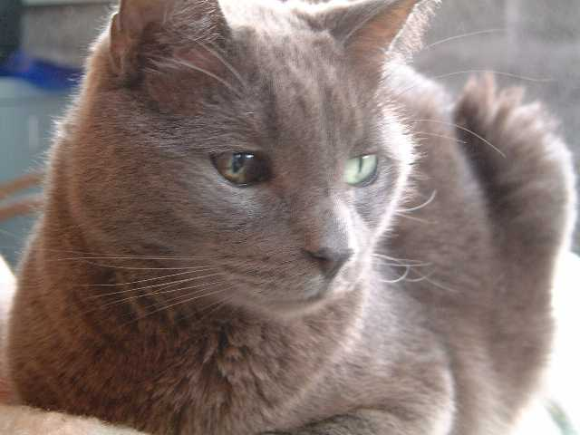

The Angry Song
About Emily. We were 14 and dumb af.
Appleseed
Great King Plato. If you get that reference I'll literally send you a thank you card irl.
Blitz
Not really much to say about this one except I fuck up a lot. Not as many times as it sounds like, but more than I'd like.
Creep
For Matt Wells. He and I took a very slooow bus from Boulder Colorado to NYC. He saw a pretty girl in a truck stop and decided he wanted to stay with her in Nebraska forever.
I actually had to trick him to get him back on the bus, but he was super drunk so it was easy. I was super drunk too so that made it harder.
He ended up writing a nice little book of poems about it. I wrote this silly song about it. My song is filled with lies but the video description revealed the truth of it so everything has turned out ok.
Did You Even
OMG A BREAK UP SONG. SO SAD.
No Name
What did you say?
Ocean
The first song I ever recorded on a computer.
pts
The meaning behind the acronym PTS is the secretest of secrets. Only the boringest stuff obtains that level of secret, because I don't want anyone to find out I have boring secrets.
Ripcurl
When I was a kid, the doctars found teeny tiny shells embedded in the skin, deep inside my ear canals. Too much time in the ocean, apparently.
The Shoes Song
Sam and I wrote this in high school. And yes, it's supposed to be a joke. Lustig means funny, you know. In German.
Song About Troubles
Might be about drugs? More likely I just needed some kind of words.
Song for Kvn
Kevin wrote the words. He also wrote music for them. I'm not sure why I went ahead and wrote completely different music for it.
Song for Ophelia
This isn't some metaphor or literary reference or something, I was dating a girl named Ophelia. Then we broke up and OH THE SADNESS. Same girl as the other break up song.
Song for Zooey

Strip
Some notes. Also pedals.
The Watching Trains Song
Again, no metaphor here. We used to go hang out by the railroad tracks and drink and talk. I suppose this song could've been about any of those people, but in reality, it was Stoo Peck I was looking for at the time.
Willis
This song actually is a metaphor. Or is it? Actually, I don't think it is, I just changed my friends name, as a SO SUBTLE reference to Wesley Willis, who, like my friend, was frequently suffering because of schizophrenia.